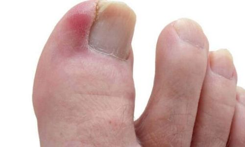
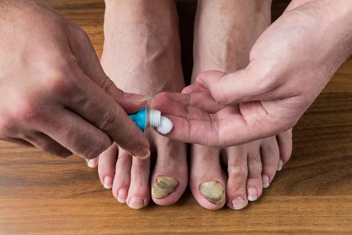

Alívio para hoje. Prevenção para sempre.

Unhas encravadas
Cuidado especializado para aliviar o desconforto e tratar unhas encravadas, promovendo mais conforto, saúde e bem-estar para seus pés. Um atendimento cuidadoso e personalizado para recuperar a aparência e a qualidade das unhas.
Podologia preventiva
Rotinas de cuidado para manter seus pés saudáveis e longe de problemas recorrentes.

Pé diabético
Cuidado especializado para prevenir e tratar complicações nos pés causadas pelo diabetes, promovendo saúde, conforto e segurança.

Tratamento de micose
Tratamento especializado para combater micoses, ajudando a recuperar a saúde, aparência e bem-estar dos pés.
Órteses e prevenção
Uso de órteses para auxiliar na correção e prevenção de alterações nos pés, proporcionando mais conforto e segurança.

Avaliação podológica
Investigamos suas queixas e criamos um plano de cuidado adequado à sua rotina.